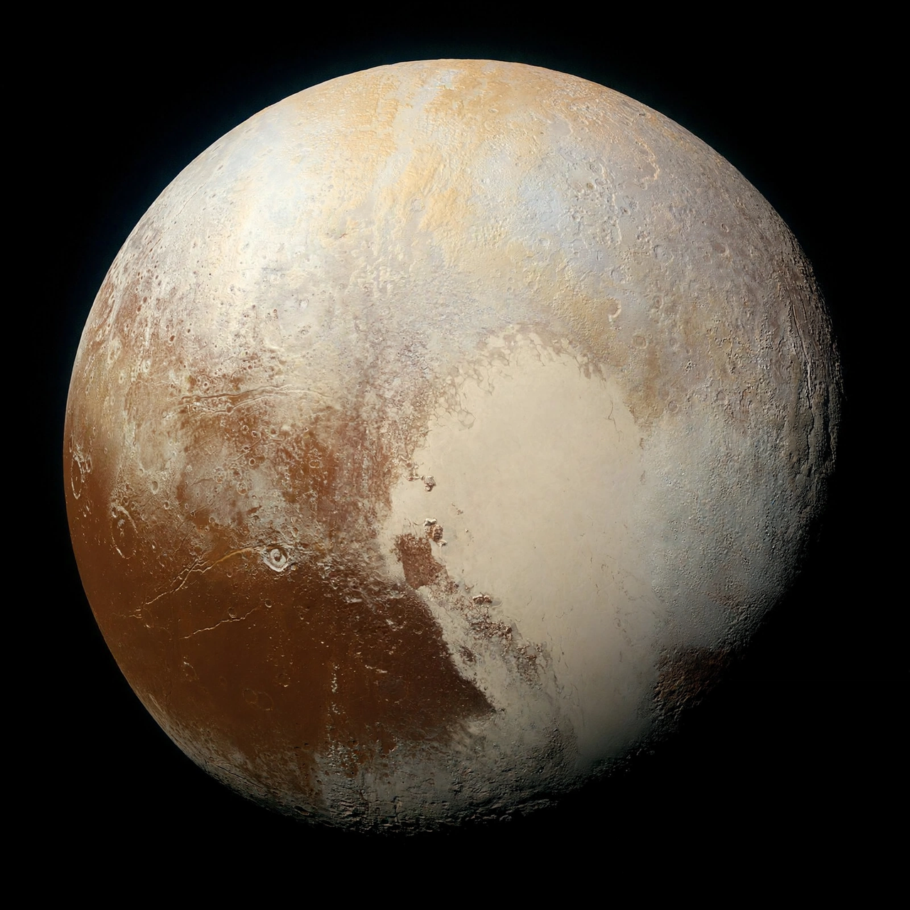

Pluto

Pluto is a dwarf planet in the Kuiper belt, a ring of bodies beyond Neptune's orbit. It was discovered by Clyde Tombaugh in 1930 and was classified as the Solar System's ninth planet until 2006, when the International Astronomical Union redefined 'planet' and reclassified Pluto as a dwarf planet — a decision still popularly debated.
Pluto is smaller than Earth's Moon, with a heart-shaped nitrogen glacier (Tombaugh Regio) on a surface of nitrogen, methane and carbon-monoxide ices. It has five known moons, the largest being Charon, so big relative to Pluto that the pair are sometimes called a double system.
Exploration
NASA's New Horizons spacecraft flew by Pluto on 14 July 2015, returning the first close images of its varied terrain — water-ice mountains, flowing nitrogen glaciers and a thin nitrogen atmosphere with haze layers.
Orbit
Pluto's orbit is eccentric and inclined, taking 248 Earth years; for 20 of those years it is actually closer to the Sun than Neptune, most recently from 1979 to 1999.